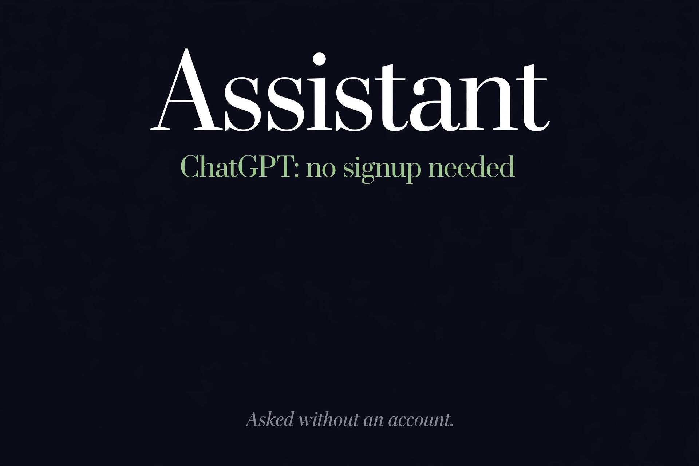

Is There a Free AI Personal Assistant? We Asked Without an Account (2026)
Quick answer: Yes. We opened ChatGPT as an anonymous visitor on October 17, 2026, sent two messages, and got full replies with no login wall at any point — no account, no email, no phone number. Chat history and memory need an account. Meta AI could not be tested from our environment.

| ChatGPT (free tier) | Meta AI | |
|---|---|---|
| Free? | Yes — $0 tier | Yes — advertised free |
| Account needed to chat? | No — tested anonymously | Unverified — blocked in our test env |
| What we observed | 2 messages sent, 2 full replies, zero walls | Could not load the site |
| Anonymous limits | No history, no memory; long-term caps untested | Unknown |
The test we didn't expect to pass
We opened chatgpt.com as a fully anonymous visitor — no login, no account, nothing. The landing page showed no wall. The chat box accepted input immediately. We sent a message and got a complete AI reply. We sent a second one and got another. At no point — landing, typing, sending, or after two full rounds — did anything ask for an email, a phone number, or an account. The session ran as a temporary anonymous conversation, and it just worked.
This surprised us. ChatGPT is the product most people assume demands signup, and for years that was true. As of our October 17, 2026 test, the free tier genuinely opens its front door to strangers. Their official pricing page confirms the free tier is open to everyone, though we only verified the chatting itself — not whether anonymous use stays unlimited forever.
What "free and anonymous" actually gets you
Honest labeling, as always. Anonymous ChatGPT is a genuinely useful free assistant, but the no-account version is a lighter product: no chat history (close the tab and it's gone), no memory across sessions, and the heavier features and higher limits live behind paid plans. For quick questions, drafting help, and everyday assistant tasks, none of that matters. For ongoing work where the AI should remember you, you'll want the account — which is exactly the trade the free tier is designed around. Our four-meanings-of-free guide covers this pattern: the free version is real, the account buys continuity.
Meta AI: the one we couldn't test
Meta AI (meta.ai) markets itself as a free personal AI chatbot and assistant, and it belongs in this article. But our test environment's network policy blocks the site entirely, so we could not run the anonymous test at all. We are marking it unverified rather than guessing — a blocked page proves nothing about signup requirements. If you've tested Meta AI anonymously from an unfiltered connection, that data point is still missing from our board.
Where this fits
This result slots neatly into our ranked list of genuinely no-signup agents: ChatGPT joins it on the strength of anonymous chat, alongside Duck.ai for private conversations and Andi for cited research. Three different jobs, three tools that let you start without handing over an email. That combination didn't exist a year ago — the no-signup shelf is getting longer, and we're re-testing it regularly.
FAQ
Is there a free AI personal assistant?
Yes. On October 17, 2026 we opened ChatGPT as an anonymous visitor, sent two messages, and received full replies with no login wall at any point — no account, no email, no phone number. Chat history and memory features require an account.
Can I use ChatGPT without signing up?
Yes, for chatting. Our test found the landing page has no wall, the chat box accepts input immediately, and anonymous temporary sessions return full AI replies. We verified two rounds of messages; whether anonymous use is unlimited long-term was not tested.
Is Meta AI free without an account?
We could not verify this. Meta's site was blocked by our test environment's network policy, so no anonymous test was possible. We report it as unverified rather than guessing.
What's the catch with free anonymous ChatGPT?
No chat history and no memory across sessions — each anonymous visit is a fresh temporary session. Heavier features and higher limits sit behind paid plans. As with any free AI product, don't paste sensitive data into it.
Which free AI assistants need no signup?
For general chat: ChatGPT's free tier (tested anonymously, October 2026). For private chat: Duck.ai. For research with citations: Andi. All three are in our ranked list of genuinely no-signup agents.